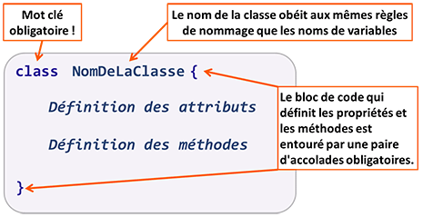
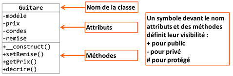
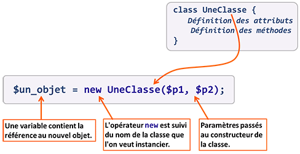
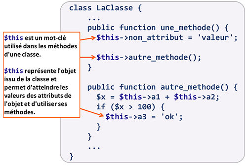
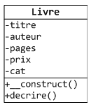
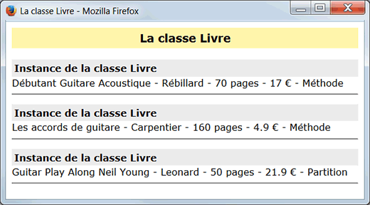

Depuis PHP 5, le modèle objet proposé par PHP est complet : définition de classes, héritage, visibilité des méthodes et attributs, classes et méthodes abstraites, interfaces, etc.
Une classe est une structure de données créée par le développeur pour représenter une abstraction du "monde" qu'il doit gérer dans son développement. Par exemple pour une gestion de production, le "monde" sera composé d'abstractions comme des types de machine outil, des matières premières, des produits finis, etc. Pour un jeu, le "monde" sera composé d'abstractions comme des types de personnages, des armes, des lieux, des véhicules, etc.
Une abstraction aura des caractéristiques particuliéres et pourra effectuer des actions (ou y être soumises). Dans la structure de données classe, une caractéristique est appelée un attribut (ou une propriété) et la réalisation d'une action correspond à un appel de méthode. Ce ne sont ni plus ni moins que des variables et des fonctions, avec la particularité qu'elles sont définies dans une classe et non dans un programme (ou un script).
Pour passer de l'abstraction à la "réalité" on va, à partir d'une classe, créer des objets. On appelle cela instancier une classe. A l'issue de cette opération on a donc un objet avec les éléments caractériques de sa classe et qui va pouvoir effectuer (ou subir) les actions définies par sa classe. Les valeurs des attributs d'un objet seront personnalisées en fonction des caractéristiques propres de chaque objet. Dit autrement, chaque objet disposera d'un espace mémoire personnel pour ses attributs. Les méthodes, quant à elles, ne sont pas personnalisables et leur valeur (une fonction) est immutable.
Par exemple, considérons une classe Voiture avec un attribut couleur. La valeur de l'attribut couleur
pour l'objet Cadillac Eldorado sera "rose bonbon" alors que celle
pour l'objet 2CV sera "bleu".
Malgré leurs différences d'aspect et de caractéristiques, les 2 objets issus de la classe Voiture auront des méthodes identiques, comme par exemple démarrer,
accélerer, freiner.
Les classes de cette forme de programmation orientée objet ne sont rien d'autre que l'application des idées de Platon et de sa théorie des formes.
Il existe d'autres formes de programmation orientée objet, notamment celle basée sur l'utilisation de prototypes pour représenter les abstractions. On trouve ce paradigme dans des langages comme JavaScript.
Ce chapitre sera illustré par l'utilisation de classes liées à une activité marchande de vente sur Internet. Les produits vendus seront des d'abord des guitares puis nous étendrons notre catalogue à d'autres produits concernant les guitares (méthodes, partitions, cordes, etc.).
L'exemple ci-dessous est un exemple simplifié d'une classe représentant un modèle de guitare proposé à la vente sur notre site.
L'usage veut que le code correspondant à une classe soit mis dans un fichier qui ne contient que
ce code (exemple : guitare.class.php), puis que ces fichiers soit inclus dans le
script principal (comme le fichier bib_fonctions.php). Dans le cadre de ce
tutoriel, par souci de simplification, le code des classes sera directement inclus dans le
script principal.
Contrairement à d'autres langages orientés objet, PHP n'utilise pas la syntaxe
à point pour accéder aux attributs et aux méthodes d'un objet.
Rappel : dans PHP l'opérateur point (.) est l'opérateur de concaténation.
Pour accéder aux attributs et aux méthodes d'un objet, on utilise en PHP l'opérateur ->.
$objet -> attribut $objet->methode() $this->attribut $this -> methode()

Le nom d'une classe doit commencer par une lettre ou un caractère _ (underscore). Les caractères suivants peuvent être des lettres, des nombres, ou des caractères _ (underscore).
Le nom des classes est insensible aux minuscules et majuscules. Ainsi UneClasse, Uneclasse, UNECLASSE et UNeCLaSSe feront référence à la même classe.
Une règle d'usage veut que le nom d'une classe commence par une lettre majuscule.
private string $nomAttribut; public int|string $autreAttribut; protected mixed $attributSupp;
La définition d'un attribut commence avec un des mots-clés private, public
ou protected. Ce mot-clé définit la visibilité de l'attribut,
c'est à dire depuis où l'attribut peut être vu/accédé (plus d'infos plus loin dans l'encapsulation).
Ensuite, il est recommandé d'indiquer le type de l'attribut. Depuis PHP8, il est possible d'utiliser
une union de type, ou le type mixed.
En ce qui concerne le nom d'un attribut :
$, comme les variables "ordinaires".
$monAttribut
est différent de $MonAttribut ou de $MONattribut.
On peut affecter une valeur initiale à un attribut au moment de sa définition. Exemple :
private string $nomAttribut = 'abcd'; public int|string $autreAttribut = 123; protected array $attributSupp = ['toto', 'tata'];
A mon avis, la possibilité d'affecter une valeur initiale à un attribut lors de sa définition ne devrait être utilisée que dans les classes qui ne disposent pas de méthode constructeur (plus d'infos plus loin dans Constructeur et destructeur).
Dans notre exemple, la classe Guitare aura 4 attributs, tous privés :
- modele : le modèle de la guitare (exemple Guild D120, Fender Villager),
- prix : le prix de la guitare en euros,
- cordes : le nombre de cordes, soit 4, 6 ou 12,
- remise : le taux de remise éventuel sur le prix.
private function nomMethode1() : int {
// corps de la méthode
}
public function nomMethode2 (int|string $p1,
?string $p2 = null) : void {
// corps de la méthode
}
protected function nomMethode3 (array &$p1) : void {
// corps de la méthode
}
La définition d'une méthode commence avec un des mots-clés private, public
ou protected. Ce mot-clé définit la visibilité de la méthode,
c'est à dire depuis où la méthode va pouvoir être invoquée (plus d'infos plus loin dans l'encapsulation).
Les méthodes ne sont rien d'autres que des fonctions et comme telles elles sont soumises aux mêmes règles que les autres fonctions du langage pour le nommage, les paramètres, les renvois de valeur (voir page Notions de base - Les fonctions et suivantes).
Dans notre exemple, la classe Guitare aura 4 méthodes, toutes publiques :
- __construct() : la méthode constructeur de la classe,
- setRemise() : pour mettre à jour le taux de remise,
- getPrix() : pour obtenir le prix de vente (prix - remise éventuelle),
- decrire() : pour afficher une description de la guitare.
Le mot __construct() est un mot réversé permettant de définir une méthode particulière, appelée constructeur de la classe (plus d'infos plus loin dansConstructeur et destructeur).
Il ne faut pas indiquer de type de valeur de retour pour la méthode constructeur __construct(). En indiquer un, même void, entraîne
une erreur fatale qui arrête le script.
Par souci de simplification les méthodes ne seront pas décrites dans les exemples. Dans un développement réel, la description et les commentaires de méthodes sont obligatoires, par exemple avec le formalisme PHPDoc.
Dans un diagrammme de classes UML (UML signifie Unified Modeling Language), une classe est représenté par un rectangle contenant 3 compartiments :


La création d'un objet à partir d'une classe s'appelle une instanciation. Un objet est une instance d'une classe.
L'instanciation se fait avec l'opérateur new, suivi du nom de la classe à
instancier. L'opérateur new permet donc de créer un objet, ce qui implique la réservation de l'espace mémoire occupé par cet objet, plus précisément par ses attributs. Après avoir créer l'objet, l'opérateur new renvoie une référence (sorte d'adresse mémoire) qui pointe sur l'objet (ou l'espace mémoire occupé par cet objet). Sur la figure précédente, cette référence est donc affectée
dans la variable $un_objet.
Si des paramètres doivent être passés au constructeur de la classe (voir plus loin Constructeur et destructeur), le nom de la
classe doit être suivi d'une paire de parenthèses entourant les paramètres effectivement transmis à la méthode constructeur
(exemple : $objet
= new Classe($p1, $p2);).
Si la classe n'a pas de constructeur ou si son constructeur n'attend pas de paramètre, les
parenthèses sont facultatives (exemple : $objet = new Classe;).
La syntaxe $objet->uneMethode() permet d'appeler, ou d'invoquer, la méthode uneMethode() pour
l'objet référencé par $objet.
A l'intérieur d'une classe (c'est à dire à l'interieur du bloc contenant sa définition), la "constante magique" PHP __CLASS__ peut être utilisée
pour connaître le nom de la classe.
La fonction get_class(), quant à elle,
permet de connaître le nom de la classe dont l'objet est une instance, à l'intérieur comme à l'extérieur d'une classe.
$this

$this
class UneClasse {
// Définition des attributs
...
public function methode1() : void {
$this->attribut1 = 'abc';
$this->methode2();
}
public function methode2() : void {
$x = $this->attribut2 + $this->attribut3;
if ($x > 100){
$this->methode3();
}
}
}
La pseudo-variable $this s'utilise uniquement à l'intérieur de la définition des méthodes d'une
classe. C'est une référence sur l'objet pour lequel la méthode est appelée, qui permet donc d'accéder à ses attributs, et d'invoquer des méthodes pour cet objet.
Quand $this est utilisé pour travailler avec un attribut, le nom de l'attribut ne
doit pas être précédé du caractère $ comme c'est le cas lors de sa définition.
On écrit donc $this->attribut et pas $this->$attribut
En PHP, $this doit être utilisé explicitement (i.e. $this->attribut =
10 ou $this->methode()). Il n'y a pas de mécanisme qui permettrait une
référence implicite (i.e. attribut = 10 ou methode()).

Ecriver la classe Livre dont le modèle est ci-contre.
L'attribut pages est un nombre de pages.
L'attribut cat est une catégorie qui peut être "Méthode", "Partition", "Biographie" ou "Autre".
La méthode decrire() doit afficher les détails d'un livre (i.e. la valeur de tous les
attributs).
Vous devez instancier 3 livres avec les informations suivantes :
| Titre | Auteur | Nb Pages | Prix | Cat. |
| Débutant Guitare Acoustique | Rébillard | 70 | 17 | Méthode |
| Les accords de guitare | Carpentier | 160 | 4.90 | Méthode |
| Guitar Play Along Neil Young | Leonard | 50 | 21.90 | Partition |
